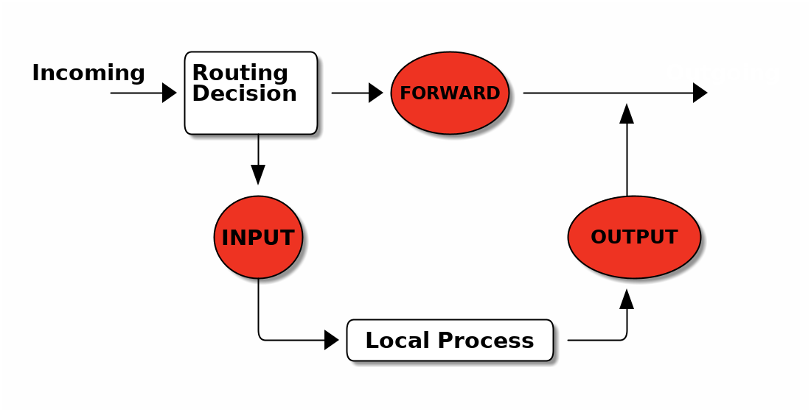

Familiar With Linux Networking Command Line Tools
Table of Contents
- 1. iproute2,
ifconfig,arp,route— Configure A Network Interface - 2. ping — send ICMP ECHO_REQUEST to network hosts
- 3. route — show / manipulate the IP routing table
- 4. netstat — Print network information
- 5. tcpdump — dump traffic on a network
- 6. iptables — administration tool for IPv4 packet filtering and NAT
- 7. netcat — TCP/IP swiss army knife
- 8. nmap — Network exploration tool and security / port scanner
1 iproute2, ifconfig, arp, route — Configure A Network Interface
References
man ip man ip-address man ip-link man ip-neighbour man ip-route man ifconfig man arp man route
To show active network interfaces
ip addr ip addr show eth0 ip addr show up ip -s link # or ifconfig -a ifconfig eth0 ifconfig
To assign IP address 192.168.8.8 to eth0
ip addr add 192.168.8.8/24 dev eth0 ip addr add 192.168.8.9/24 dev eth0 label eth0:1 # or ifconfig eth0 192.168.8.8 netmask 255.255.255.0 ifconfig eth0:1 192.168.8.9 netmask 255.255.255.0
To delete IP address
ip addr del 192.168.8.9/24 dev eth0
To bring eth0 up
ip link set eth0 up # or ifconfig eth0 up
To bring eth0 down
ip link set eth0 down # or ifconfig eth0 down
ARP
### Display the ARP cache ip neigh show # or arp -an # or ip neigh show dev eth0 ip neigh show 192.168.1.1 ### Add a permanent ARP entry ip neigh add 192.168.1.4 lladdr aa:bb:cc:dd:ee:ff dev eth0 nud permanent # or arp -i eth0 -s 192.168.1.4 aa:bb:cc:dd:ee:ff ### Change an ARP entry ip neigh change 192.168.1.4 lladdr aa:bb:cc:dd:ee:ff dev eth0 ### Delete an entry ip neigh del 192.168.1.4 lladdr aa:bb:cc:dd:ee:ff dev eth0 nud permanent # or arp -d 192.168.1.4 ### Flush the ARP cache ip neigh flush dev eth0
2 ping — send ICMP ECHO_REQUEST to network hosts
To check network availability to some host, e.g. cs3.swfu.edu.cn, do
ping cs3.swfu.edu.cn # ping 10 times ping -c 10 cs3.swfu.edu.cn # ping every 10 seconds ping -i 10 cs3.swfu.edu.cn
3 route — show / manipulate the IP routing table
### Check routing table ip route show ip route get 202.203.132.244 # or netstat -rn # or route -n ### Manually add a new route to a host (e.g. 192.168.1.5) through gateway 192.168.1.1, do ip route add 192.168.1.5/24 via 192.168.1.1 # or route add 192.168.1.5 netmask 255.255.255.255 gw 192.168.1.1 ### Manually add a default route through gateway 192.168.1.1, do ip route add default via 192.168.1.1 # or route add default gw 192.168.1.1 ### To manually delete a route ip route del 192.168.1.5/24 via 192.168.1.1 # or route del 192.168.1.5 ### To manually delete a default route ip route del default # or route del default
man routefor more examples.
4 netstat — Print network information
netstat displays all open sockets by default
netstat ### Display only TCP connections netstat --tcp --numeric ### Show which program is listening on which port netstat --tcp --listening --programs ### Show routing table netstat --route ### Display network statistics netstat --statistics
5 tcpdump — dump traffic on a network
You have to be root (sudo) to execute most tcpdump functions.
5.1 Exercise — Get a clear idea about the output
### 1. Open a CLI terminal *A*, type: tcpdump -XS -i lo host localhost ### 2. Open another CLI terminal *B*, and type: nc -l 3333 ### 3. Open one more CLI terminal *C*, type: nc localhost 3333 # Can you see the 3-way handshake in terminal *A*? ### 4. Now, in terminal *B* or *C*, type any single letter to see what you get in terminal *A*. # Try to explain what you have seen.
5.2 Basic examples
tcpdump -nS tcpdump -nnvvS tcpdump -nnvvXS tcpdump -nnvvXS -c2 icmp tcpdump ip6 ### To capture packets that are above or below a certain size: tcpdump less 128 tcpdump greater 256 tcpdump > 256 tcpdump <= 128
5.3 host/src/dst
### To print all packets arriving at or departing from cs3: tcpdump host cs3.swfu.edu.cn ### To print all packets departing from cs3: tcpdump src cs3.swfu.edu.cn ### To print all packets arriving at cs3: tcpdump dst cs3.swfu.edu.cn
5.4 proto
### works for 'tcp', 'udp', and 'icmp'. Note that you don't have to type 'proto' tcpdump icmp tcpdump udp tcpdump tcp
5.5 port
### see only traffic to or from a certain port tcpdump port 80
5.6 src port, dst port
tcpdump src port 1025 tcpdump dst port 80
5.7 portrange
### see traffic to any port in a range tcpdump portrange 21-23
5.8 src/dst, port, protocol
### combine all three tcpdump tcp and dst port 80 tcpdump tcp dst port 80 tcpdump tcp port 80 ### Capture both DNS packets and TCP packets to/from cs3.swfu.edu.cn tcpdump "(tcp and host cs3.swfu.edu.cn) or udp port 53"
5.9 read/write
### write output to a file, or read a data file tcpdump -s 1514 port 80 -w capture_file tcpdump -r capture_file
5.10 grouping — for complex queries
tcpdump src 10.0.2.4 and (dst port 3389 or 22) # Error? try this: tcpdump 'src 10.0.2.4 and (dst port 3389 or 22)'
5.11 References
6 iptables — administration tool for IPv4 packet filtering and NAT
6.1 References
- http://www.netfilter.org/documentation/
- Iptables Tutorial
man iptables- Linux Network Administrators Guide, chapter 9.
- TCP/IP Network Administration, 3rd Edition, Apr 2002, O´REILLY.
- Wikipedia – iptables
- RFC2663 – NAT Terminology and Considerations
- RFC3022 – Traditional NAT
- RFC2827 – Network Ingress Filtering
- RFC1858 – Security Considerations - IP Fragment Filtering
- RFC3128 – Protection Against a Tiny Fragment Attack
6.2 Big picture

6.3 Basic Examples
You have to be root (sudo) to execute iptables functions.
### Add a rule into the INPUT chain, to drop all packets from 147.8.212.123, do iptables -A INPUT -s 147.8.212.123 -p all -j DROP ### To delete this rule, do iptables -D INPUT -s 147.8.212.123 -p all -j DROP ### Drop ICMP packets from localhost, do iptables -A INPUT -s 127.0.0.1 -p icmp -j DROP ### Drop ping packets from anywhere except localhost, do iptables -A INPUT -s ! 127.0.0.1 -p all -j DROP ### Filter a network segment, do iptables -A INPUT -s 192.168.1.0/24 -p all -j DROP
6.4 More Examples
### Syn-flood protection iptables -A FORWARD -p tcp --syn -m limit --limit 1/s -j ACCEPT ### Furtive port scanner proctetion iptables -A FORWARD -p tcp --tcp-flags SYN,ACK,FIN,RST RST -m limit --limit 1/s -j ACCEPT ### Ping of death proctetion iptables -A FORWARD -p icmp --icmp-type echo-request -m limit --limit 1/s -j ACCEPT
7 netcat — TCP/IP swiss army knife
7.1 Setup a simple C/S chat session
Suppose the server IP is 202.203.132.244
### At the server side, do nc -l 3333 ### At the client side, do nc 202.203.132.244 3333 # Start chatting
7.2 Transferring Files
### 1. Similar to the chat example above, at the server side, do cat backup.iso | nc -l 3333 ### 2. At the client side, do nc 202.203.132.242 3333 > backup.iso ### As you may have noticed, netcat does not show any info about the progress of the # data transfer. This is inconvenient when dealing with large files. In such cases, a # pipe-monitoring utility like =pv= can be used to show a progress indicator. For # example, the following shows the total amount of data that has been transfered in # real-time on the server side: cat backup.iso | pv -b | nc -l 3333 ### Of course, the same can be implemented on the client side by piping netcat's output through =pv=: nc 202.203.132.242 3333 | pv -b > backup.iso
7.3 Other Examples
### 1. Netcat is extremely useful for creating a partition image and sending it to a remote machine on-the-fly: dd if=/dev/hdb5 | gzip -9 | nc -l 3333 # On the remote machine, connect to the server and receive the partition image with the following command: nc 202.203.132.242 3333 | pv -b > myhdb5partition.img.gz # This might not be as classy as the partition backups using =partimage=, but it is efficient. ### 2. Another useful thing is to compress the critical files on the server machine with =tar= # and have them pulled by a remote machine: tar -czf - /etc/ | nc -l 3333 # As you can see, there is a dash in the tar options instead of a filename. This is because # tar's output needs to be passed to netcat. # On the remote machine, the backup is pulled in the same way as before: nc 202.203.132.242 3333 | pv -b > mybackup.tar.gz ### 3. IPv6 # In terminal A: nc -6 -l 3333 # In terminal B: nc -6 ::1 3333
7.4 Telnet-like Usage
Netcat can be used in order to talk to servers like telnet does. For example, in order to get the definition of the word “server” from the “WordNet” database at the dict.org dictionary server, I’d do:
nc dict.org 2628 DEFINE wn server
7.5 Works as a Port Scanner too
A useful command line flag is -z. When it is used, netcat does not initiate a
connection to the server, but just informs about the open port it has found. Also,
instead of a single port, it can accept a port-range to scan. For example:
nc -z cs3.swfu.edu.cn 80-90
In this example, netcat scanned the 80-90 range of ports.
7.6 Grab Port Banners
So we're interested in knowing what's running behind port 80 and 21. We can use netcat to grab port banners in the following way:
nc -v -n 202.203.132.242 80 nc -v -n 202.203.132.242 21
- more examples:
- http://en.wikipedia.org/wiki/Netcat
- The man page contains some more interesting examples, so take the time to read it.
8 nmap — Network exploration tool and security / port scanner
You have to be root to execute most nmap functions.
8.1 Simple Examples
nmap 202.203.132.244 ### no reverse DNS lookup: nmap -n 202.203.132.244 ### verbose: nmap -n -v 202.203.132.244 ### even more: nmap -n -vv 202.203.132.244
8.2 Scanning more than one machine
nmap -n -vv 202.203.132.242,244 nmap -n -vv 202.203.132.241-244 nmap -n -vv 202.203.132.241-242,244 nmap -n -vv 202.203.132.* nmap -n -vv 202.203.132.192-255 nmap -n -vv 202.203.132.192/26 nmap -vv -n 192.168.0-2.* nmap -vv -n 192.168.0,1,2.0-255
8.3 Scanning specific ports:
nmap -vv -n -p 80 202.203.132.244 nmap -vv -n -p 21,23,25,80-120 202.203.132.244 nmap -vv -n -p 21,23,25,80-120 202.203.132.241-244
8.4 Various Scanning options:
There are many scanning options available with Nmap. All have their advantages and disadvantages. You should use them according to your requirements.
8.4.1 -sS
### SYN scanning (this is the default option) nmap -vv -n -sS 202.203.132.244
TCP SYN scan gather information about open ports without completing the TCP handshake process. When an open port is identified, the TCP handshake is reset before it can be completed. This technique is often referred to as “half open” scanning.
It's the default scanning technique if you are root. It's the most common scan to use because it works on all networks, across all operating systems.
- ADV
- The TCP SYN scan never actually creates a TCP session so isn't logged by the destination host's applications. And hence it's a quiet scan.
- DISADV
- You need privileged access to the system.
8.4.2 -sT
### TCP connect scanning nmap -vv -n -sT 202.203.132.244
It performs the 3-way handshake.
- ADV
- You don't need to have privileged access.
- DISADV
- Since it completes a TCP connection so apparent when application connection logs are examined.
I would suggest you to never ever use this scan.
8.4.3 -sF, -sX, -sN
### FIN scan nmap –vv –n –sF 218.194.106.91 ### Xmas tree scan nmap –vv –n –sX 192.168.0.1 ### NULL scan nmap –vv –n –sN 192.168.0.1
These are called “stealth” scans. They send a single frame to a TCP port without any TCP handshaking or additional packet transfers. They are more “stealth” than SYN scan and must be used if the remote machine is not a Windows-based machine. I’ll tell you why.
These scans operate by manipulating the bits of the TCP header. Nmap creates TCP headers that combine bit options that should never occur in the real world. These purposely mangled TCP header packets are thrown at a remote device, and nmap watches for the responses.
Window-based systems will reply with a RST frame for all queries, regardless of the status of the specific port that was queried.
- ADV
- Since no TCP sessions are established, they are quiet stealthy.
- DISADV
- Can't be used against windows-based machine.
8.4.4 -sU
### UDP scan nmap -vv -n -sU 202.203.132.244
The only scan in the arsenal of Nmap to identify UDP ports.
8.4.5 -sO
### Protocol scan nmap -vv -n -sO 202.203.132.244
Sometimes it has to be checked that what protocols the remote machine is running. It locates uncommon IP protocols that may be in use on the remote system. Hence it helps determining the type of remote device, i.e. is that router or printer or workstation etc.
- DISADV
- This scan will appear on any network monitoring application that identifies the IP protocol types in use.
8.4.6 -sR
### RPC scan nmap -vv -sR 202.203.132.244
It's used to locate and identify RPC applications. It runs automatically during a version scan (-sV, explained later)
- DISADV
- RPC scan opens application sessions and hence it will be logged.
8.4.7 -sV
### Version scan nmap –vv –sV 202.203.132.244
The scans which we have seen by now give you the status of the port and the service running on them. For exploiting the service you need the exact version number of the service. Version scan gives you this.
- DISADV
- It opens sessions with the remote applications, which will often display in an application's log file.
8.4.8 -sA
### ACK scan nmap –vv –sA 218.194.106.91
It's quite useful when there is some packet filtering device or firewall. It never locates an open port. It does the job of identifying ports that are filtered through a firewall. It doesn't open any application sessions and hence the conversation between nmap and the remote device is relatively simple.
- DISADV
- It can only tell whether port is filtered or unfiltered. But can never definitively identify an open port.
8.4.9 -sI
### Idle scan nmap –vv –sI 218.194.106.91
It's the stealthy most scan you can have. Tough to launch because you need a zombie for it. It would not be justice with this great scan to be described in just few lines. I would recommend you to read it in detail.
- ADV
- You will never be caught.
- DISADV
- Tough to launch as it's not easy to find some zombie machine.
8.4.10 -sP: Ping scan
You must have heard of ping sweep. It's Nmap's ping sweep.
# To check whether this machine is up or not, do nmap –vv –sP 192.168.0.10 # To check the whole subnet (254) machines and will tell you which are up. nmap –vv –sP 192.168.0.*
- DISADV
- Ping scan will not interoperate with any other type of scan.
8.4.11 -sW: Window scan
Forget it. As the number of operating systems vulnerable to its methodology is dwindling as operating systems are upgraded and patched.
8.4.12 -sL: List scan
Would like to say only one line about it that you must use it if a separate application provides nmap with a list of IP addresses. Rest read yourself.
8.5 O/S fingerprinting and version detection
Ok, now you can use various scanning techniques to look for open/closed or filtered/unfiltered TCP as well as UDP ports. Don't you want to know the remote operating system running?
8.5.1 -O
### Operating system fingerprinting nmap -vv -O 202.203.132.241,244
It will tell you or at least tries its best to tell you the remote operating system along with the version it's using. It at least need one open and one close TCP port. In case it doesn't, it won't be able to give the accurate result. In that case you should use some third party tool.
- DISADV
- A trained eye will quickly identify that someone is watching the network.
8.5.2 -sV
### Version detection nmap -vv -sV 202.203.132.244
As has been explained it will help you know the version of the service running on the remote machine.
8.5.3 -A: Additional, Advanced, Aggressive option
Its comprises of both the operating system fingerprinting process (-O) and the version scanning
process (-sV). i.e following two are same:
nmap -vv -sV -O 202.203.132.244 nmap -vv -A 202.203.132.244
8.6 Typical scenario
First, we’ll sweep the network with a simple Ping scan to determine which hosts are online.
nmap -sP 202.203.132.192/26
Tell me how many hosts are up?
Now we’re going to take a look at 202.203.132.240-242,244. These IPs belong to School of CIS. We’ll scan 202.203.132.240-242,244 using a SYN scan [-sS] and -A to enable OS fingerprinting and version detection.
nmap -sS -A -n -vv 202.203.132.240-242,244
Tell me what OS they are running? What services are they running?